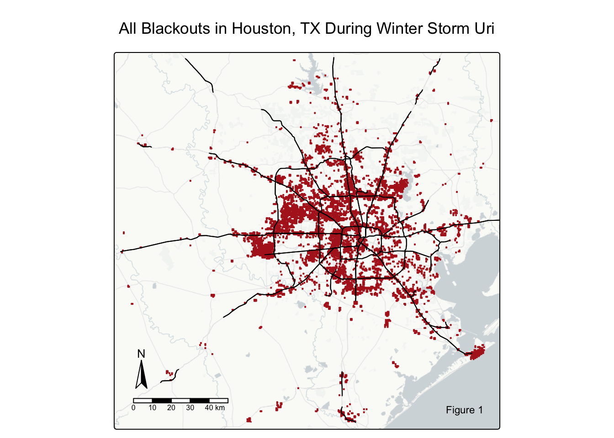
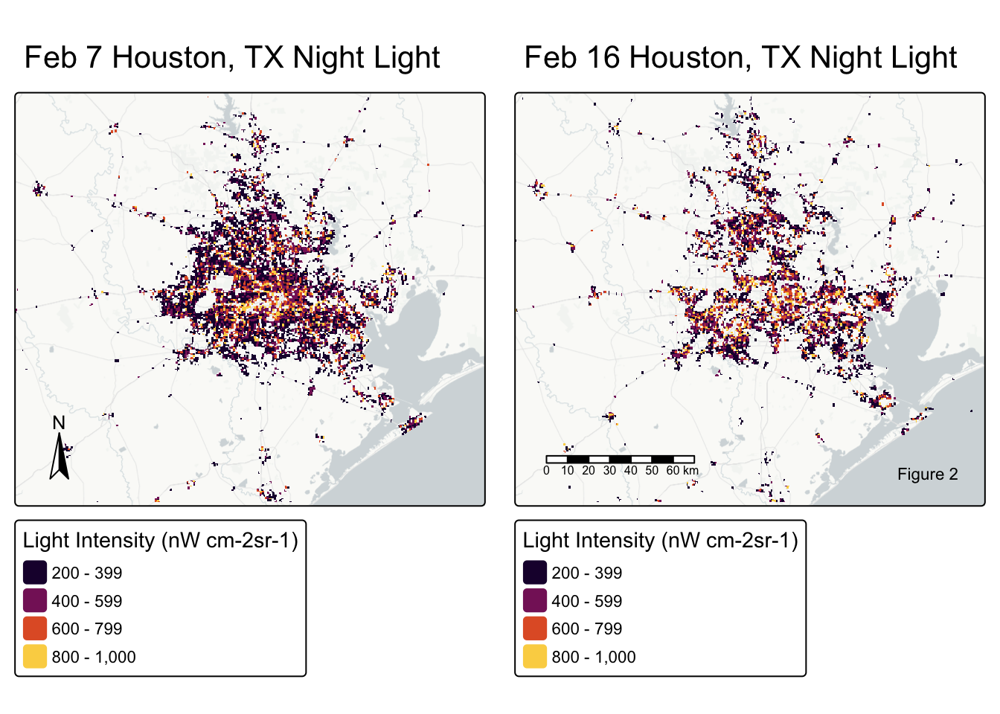
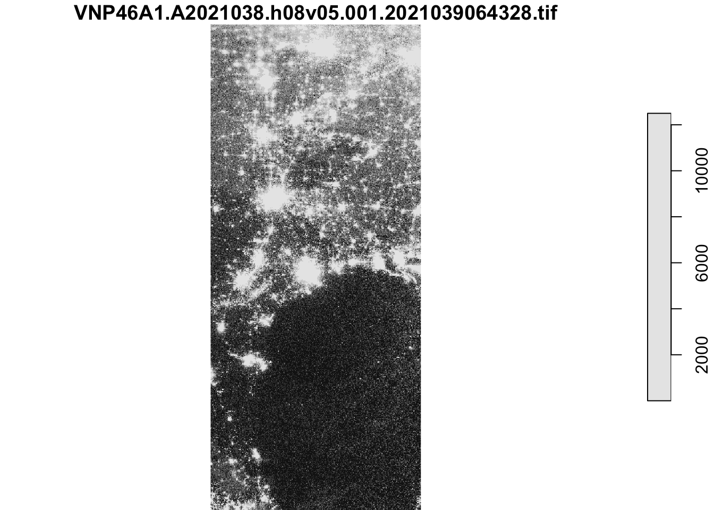
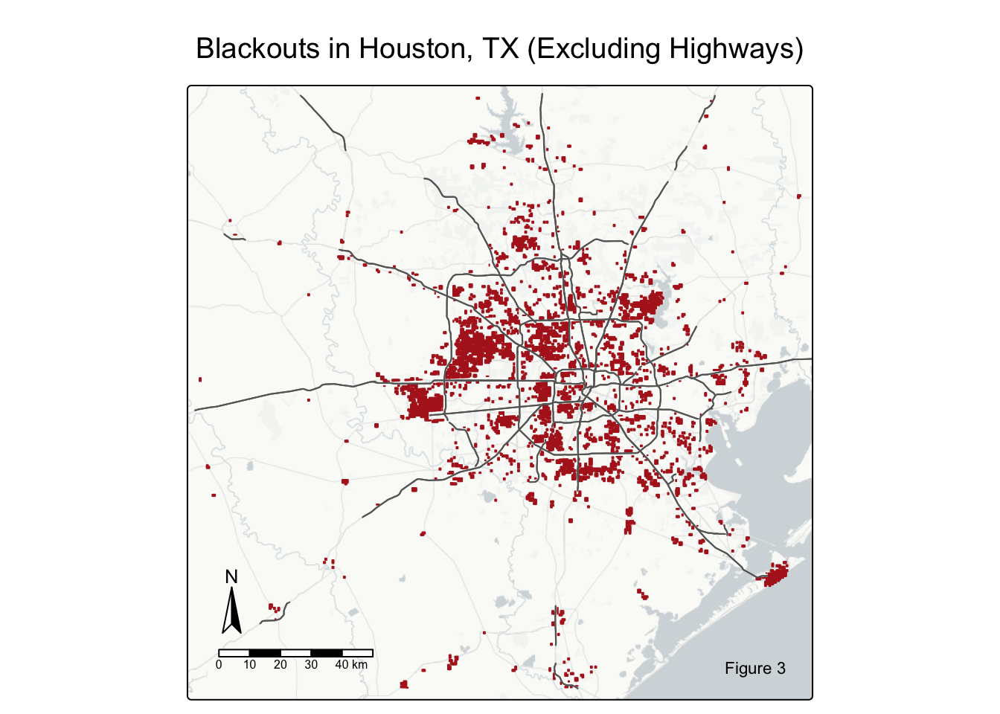
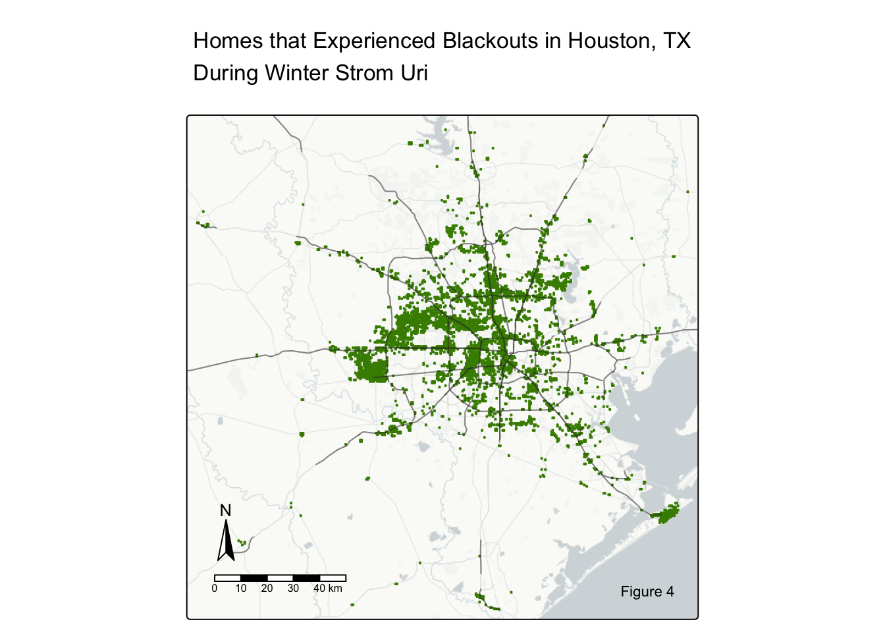
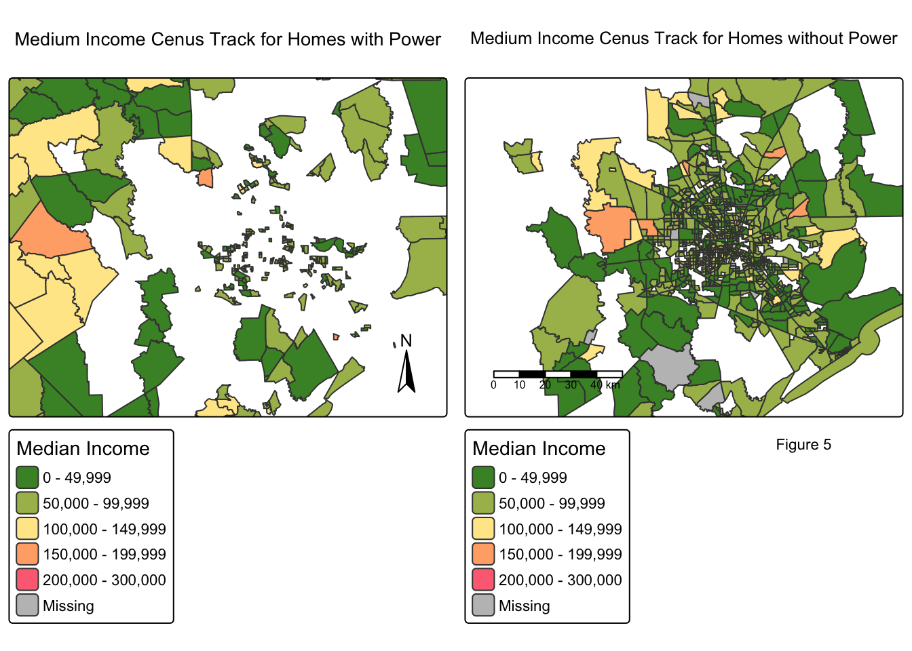
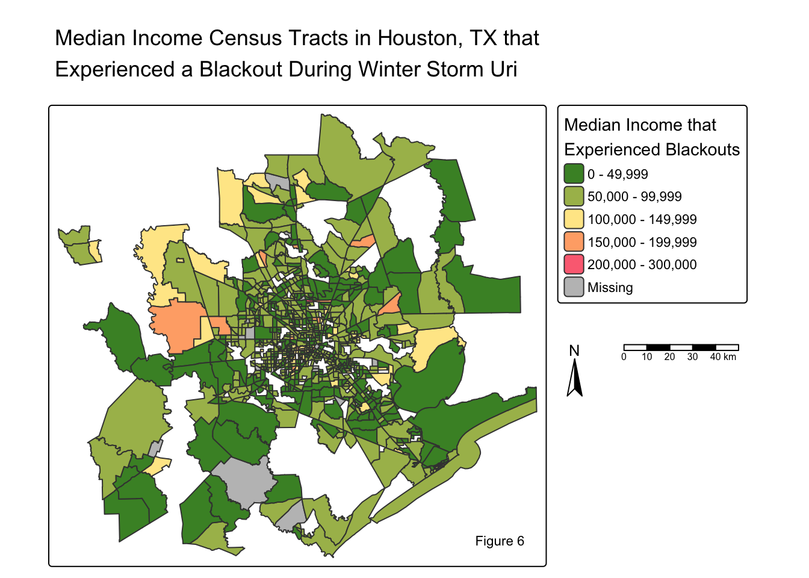
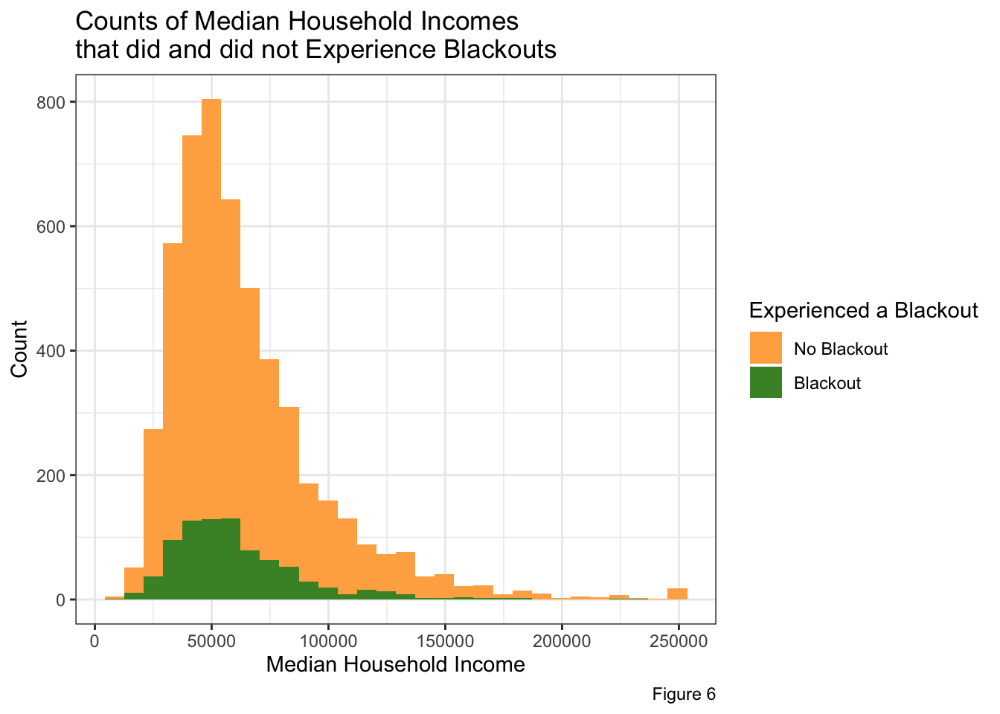
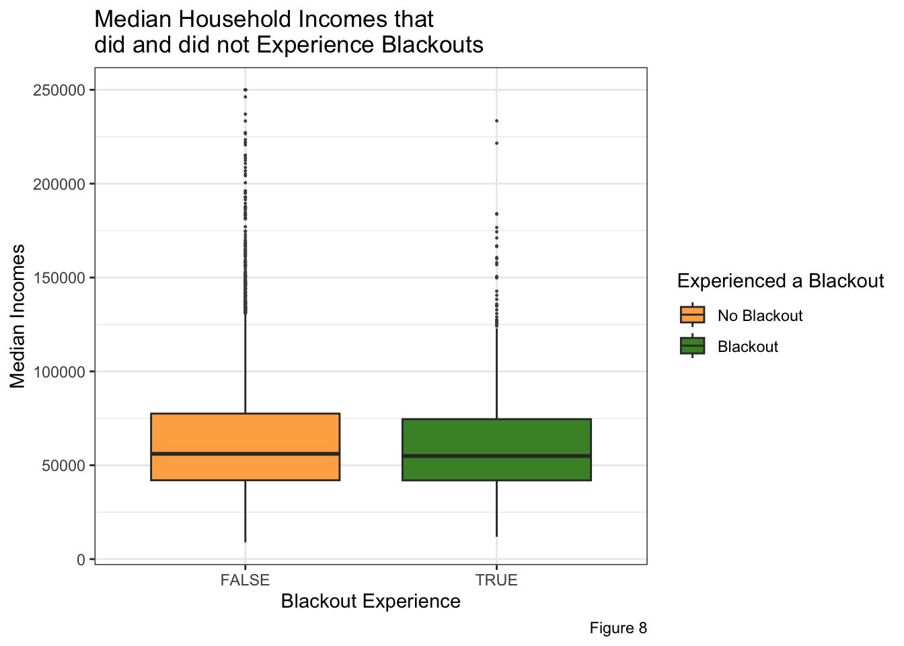
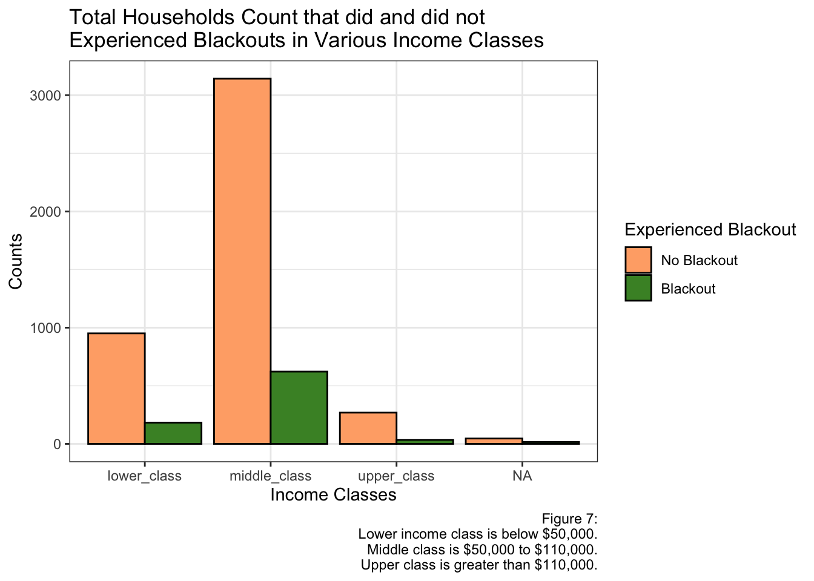

# Import libraries
library(terra) # raster handling
library(tidyverse)
library(tmap) # map making
library(kableExtra) # table formatting
library(geodata) # spatial data
library(stars)
library(raster)Winter Storm Uri in Houston TX
Winter Storm Uri in Houston, Texas
Investigating blackout data from Winter Storm Uri and comparing to Median Income Census Track data.
Downloading libraries and data
# Download Data
# Night lights data (VNP46A1)
# with read_stars()... sf
light_1 <- read_stars(here::here("data", "VNP46A1", "VNP46A1.A2021038.h08v05.001.2021039064328.tif"))
light_2 <- read_stars(here::here("data", "VNP46A1", "VNP46A1.A2021038.h08v06.001.2021039064329.tif"))
light_3 <- read_stars(here::here("data", "VNP46A1", "VNP46A1.A2021047.h08v05.001.2021048091106.tif"))
light_4 <- read_stars(here::here("data", "VNP46A1", "VNP46A1.A2021047.h08v06.001.2021048091105.tif"))
# With rast()... terra
#l1 <- rast("data/VNP46A1/VNP46A1.A2021038.h08v05.001.2021039064328.tif")
#l2 <- rast("data/VNP46A1/VNP46A1.A2021038.h08v06.001.2021039064329.tif")
#l3 <- rast("data/VNP46A1/VNP46A1.A2021047.h08v05.001.2021048091106.tif")
#l4 <- rast("data/VNP46A1/VNP46A1.A2021047.h08v06.001.2021048091105.tif")
# Road Data - just 'moterways'
roads <- st_read(here::here("data", "gis_osm_roads_free_1.gpkg"), query = "SELECT * FROM gis_osm_roads_free_1 WHERE fclass='motorway'")
# House data
houses <- st_read(
here::here("data", "gis_osm_buildings_a_free_1.gpkg"),
query = "
SELECT *
FROM gis_osm_buildings_a_free_1
WHERE (type IS NULL AND name IS NULL)
OR type IN ('residential', 'apartments', 'house', 'static_caravan', 'detached')
")
# Texas Data
# Looking at the various layeres
st_layers(here::here("data", "ACS_2019_5YR_TRACT_48_TEXAS.gdb"))
# Pulling out the geometry and income layers
geom_texas <- st_read(here::here("data/ACS_2019_5YR_TRACT_48_TEXAS.gdb"), layer = "ACS_2019_5YR_TRACT_48_TEXAS")
income_texas <- st_read(here::here("data/ACS_2019_5YR_TRACT_48_TEXAS.gdb"), layer = "X19_INCOME")Coordinate Reference Systems
Checking CRS
st_crs(light_1) # WGS 84
st_crs(light_2) # WGS 84
st_crs(light_3) # WGS 84
st_crs(light_4) # WGS 84
st_crs(roads) # WGS 84
st_crs(houses) # WGS 84
st_crs(geom_texas) # NAD83 *** NEEDS TO MATCH THE OTHERS ** # Create print message function to check crs
crs_check <- function(crs1, crs2) {
if (st_crs(crs1) == st_crs(crs2)) {
print("its a match")
} else {
print("Its NOT a match")
}
}
# Check crs between roads, houses, and TX' geom
crs_check(roads, houses)[1] "its a match"crs_check(roads, geom_texas)[1] "Its NOT a match"crs_check(houses, geom_texas)[1] "Its NOT a match"# Check crs between all the light dfs
crs_check(light_1, light_2)[1] "its a match"crs_check(light_1, light_3)[1] "its a match"crs_check(light_1, light_4)[1] "its a match"crs_check(light_2, light_3)[1] "its a match"crs_check(light_2, light_4)[1] "its a match"crs_check(light_3, light_4)[1] "its a match"# Need to change geom_texas to match the others Transforming CRS
# Change geom_texas crs to match roads' crs with st_transform()
geom_texas <- st_transform(geom_texas, st_crs(roads))Final CRS Check
# Check crs between roads, and TX' geom
crs_check(roads, geom_texas)[1] "its a match"Create Blackout Mask
2021-02-07: light_1 and light_2
2021-02-16: light_3 and light_4
Create a raster object for each day:
Combine the 2 light tiles by date - Feb 7 and 16
# Combine light data based on y
feb7sf <- st_mosaic(light_1, light_2)
feb16sf <- st_mosaic(light_3, light_4)
# Check if extents match
print(st_bbox(feb7sf))xmin ymin xmax ymax
-100 20 -90 40 print(st_bbox(feb16sf))xmin ymin xmax ymax
-100 20 -90 40 # Remove the light objects
rm(list = c('light_1', 'light_2', 'light_3', 'light_4'))Find where there were blackouts (with a power difference that’s greater than 200 nW cm-2sr-1 )
# Difference of the two days that are greater than 200 = blackouts
# Creating a list of boolean operators
difference <- (feb7sf - feb16sf) > 200
# returns TRUES for more than 200; FALSE for less than 200 Create Mask & Subset for Blackout Regions that are greater than 200
# Create raster mask of the same resolution and extent
diff_mask <- difference
# Assign NA to all locations that experienced a drop of less than 200 nW cm-2sr-1 change ("FALSE")
diff_mask[diff_mask == "FALSE" ] <- NA
# Remove the difference object
rm(difference)Vectorize the Blackout Mask
# Convert from a raster to a vector with st_as_sf
diff_mask_vec <- st_as_sf(diff_mask)
# Invalid geometries
which(!st_is_valid(diff_mask_vec)) # Tell us which specific ones are invalid
# Fixing invalid geometries
diff_mask_vec <- st_make_valid(diff_mask_vec)Crop (spatially subset) the blackout mask to the Houston area
# Create the Houston bounding box
bound_box <- st_bbox(c(xmin =-96.5, xmax = -94.5, ymax = 30.5, ymin = 29), crs = st_crs(diff_mask))
# Crop difference vector with the bounding box
diff_crop <- st_crop(diff_mask_vec, bound_box)
# ANOTHER WAY: diff_crop <- difference_mask[bound_box, op = st_intersects]Re-project the cropped blackout dataset to EPSG:3083
# Changing the crs to NAD83 / Texas Centric Albers Equal Area
diff_crop_epsg <- st_transform(diff_crop, crs = 'EPSG:3083')Plot!
# Want to Map Houston's light difference data (with the road data for clarity)
# Unionize / Aggregating road data to make it more manageable
road_union <- st_union(roads)
# Plot it!
tm_shape(diff_crop_epsg) +
tm_polygons(col = "firebrick") +
tm_shape(road_union) +
tm_lines() +
tm_basemap("CartoDB.PositronNoLabels") +
tm_title(text = "All Blackouts in Houston, TX During Winter Storm Uri") +
tm_compass(position = c("left", "bottom")) +
tm_scalebar(position = c("left", "bottom")) +
tm_credits("Figure 1", position = c("right", "bottom"))
Before and After plots
A set of maps comparing night light intensities before and after the first two storms
# Make it houston extent with "bound_box"
feb7sf_houston <- st_crop(feb7sf, bound_box)
feb16sf_houston <- st_crop(feb16sf, bound_box)
# Remove un-cropped Feb 7 and 16 light data
rm(list = c('feb7sf', 'feb16sf'))
# Create the maps!
feb7map <- tm_shape(feb7sf_houston) +
tm_raster(breaks = c(0, 500, 1000, 1500, 2500, 3500, 5000),
palette = "greys",
title = "Light Intensity (nW cm-2sr-1)") +
tm_title(text = "Feb 7 Houston, TX Night Light") +
tm_compass(position = c("left", "top"))
feb16map <- tm_shape(feb16sf_houston) +
tm_raster(breaks = c(0, 500, 1000, 3000, 5000, 10000, 20000),
palette = "greys",
title = "Light Intensity (nW cm-2sr-1)" ) +
tm_title(text = "Feb 16 Houston, TX Night Light") +
tm_scale_bar(position = c("right", "top")) +
tm_credits("Figure 2")
tmap_arrange(feb7map, feb16map, outer.margins = 0.03)
Exclude Highways from the Mask
Identify areas within 200m of all highways with a buffer
# Unionize road data to make it more manageable - Aggregating road data
road_union <- st_union(roads)
# Buffer areas within 200 m of all highways
road_buffer <- st_buffer(road_union, dist = units::set_units(200, "m"))
# Look at the Road buffer
plot(road_buffer)
Exclude the 200m highway/road buffer from the blackout area
# Merge blackout areas with road buffer
# Check if CRS match
crs_check(road_buffer, diff_crop)[1] "its a match"# Locating all blackouts NOT within the 200m highway buffer
blackouts_200m_highway <- st_difference(diff_crop , road_buffer)
# Plot it
tm_shape(blackouts_200m_highway) +
tm_polygons(col = "firebrick") +
tm_shape(road_union)+
tm_lines(col = "grey40") +
tm_basemap("CartoDB.PositronNoLabels") +
tm_title(text = "Blackouts in Houston, TX (Excluding Highways)\nDuring Winter Storm Uri") +
tm_compass(position = c("left", "bottom")) +
tm_scalebar(position = c("left", "bottom")) +
tm_credits("Figure 3")
Homes Impacted by Blackouts
Homes that overlap with areas that experienced blackouts
# Check crs
if(st_crs(houses) == st_crs(diff_crop)){ # Check if match
print("CRS match!")
} else {
warning("Updating CRS to match")
# Transform to match
diff_crop <- st_transform(diff_crop, st_crs(houses))
}[1] "CRS match!"# Invalid geometries
#which(!st_is_valid(houses))
#which(!st_is_valid(diff_crop))
# Fixing invalid geometries
houses <- st_make_valid(houses)
diff_crop <- st_make_valid(diff_crop)
# Homes that experienced blackouts
home_blackout <- st_filter(diff_crop, houses, .predicate = st_intersects)Estimate of the number of homes in Houston that lost power
# Number of observations in the home_blackout raster
est <- ncell(home_blackout)
print(paste("About", est, "of Houston homes lost power"))[1] "About 9390 of Houston homes lost power"# Remove estimate object
rm(est)Mapping Homes that experienced blackouts
# Map it!
tm_shape(home_blackout) +
tm_polygons(col = "chartreuse4") +
tm_basemap("CartoDB.PositronNoLabels") +
tm_shape(road_union)+
tm_lines(col = "grey20",
alpha = 0.3) +
tm_title(text = "Homes that Experienced Blackouts in Houston, TX\nDuring Winter Strom Uri") +
tm_compass(position = c("left", "bottom")) +
tm_scalebar(position = c("left", "bottom")) +
tm_credits("Figure 4")
Comparing Blackouts with Census Track Data
Data frames that are needed for this task:
- Texas income data = “income_texas”
- Texas geometries = “geom_texas”
Important income columns:
19013e1: median household income in the past 12 months
19052e1: wage or salary income in the past 12 months for households
Join Texas geometries and income data layers
=> a data frame of all Texas income and geometry data = “texas_df”
# Looking at dataframes
print(dim(geom_texas))
print(dim(income_texas))
# Join Texas geom and incomes
texas_df <- cbind(geom_texas, income_texas)
# Know dfs will line up b/c they are different layers of the same data
# ANOTHER WAY: LEFT JOIN: texas_df <- left_join(geom_texas, income_texas)
# Print new df's dimensions - see if the joined worked
print(dim(texas_df))
# Remove un-joined dfs
rm(list = c('geom_texas', 'income_texas'))Merge Texas data (containing income + geom) with house blackout data
(1) Data frame with homes that DID experienced a blackout and their income = “income_bo_homes”
(2) Data frame with homes that did NOT experienced a blackout and their income = “income_NO_bo_homes”
# Checking crs
if(st_crs(texas_df) == st_crs(home_blackout)){ # Check if match
print("CRS match!")
} else {
warning("Updating CRS to match")
# Transform to match
texas_df <- st_transform(texas_df, crs = st_crs(home_blackout))
}[1] "CRS match!"Filter for homes that did AND did not experience blackouts (BOs) in census data
- Homes that DID experience blackouts
# (1) st_filter for homes experiencing BOs
income_bo_homes <- st_filter(texas_df, home_blackout, .predicate = st_intersects) %>%
mutate(blackout = "TRUE") # Adding a column pertaining to experiencing a BO - Homes that did NOT experience blackouts
# (a) Look for areas of intersections
idx_intersect <- st_intersects(texas_df, home_blackout, sparse = FALSE)
# Build a logical matrix (sparse = false) of boolean operators (TRUE and FALSES) that explains which geometries between x and y intersect
# (b) Looking for areas NOT included in the intersection data
income_NO_bo_homes <- texas_df[!apply(idx_intersect, 1, any), ] %>%
mutate(blackout = "FALSE") # Adding a column pertaining to NOT experiencing a BO
# Loops over all rows to see if there is a any "TRUE" or "FALSE" values in every row
# ! keeps only rows with no intersection
# PROBLEMS: DID NOT WORK (happened to a lot of people)
# st_disjoint(texas_df, home_blackout)
# st_filter(texas_df, home_blackout, .predicate = st_disjoint)
# Because "disjoint" is saying: Keep all features in texas_df that are disjoint (do not touch or overlap) with at least ONE feature in home_blackout... not all ??
# Look at shapes - See if filtering worked... it did!
print(dim(texas_df))[1] 5265 3061print(dim(home_blackout))[1] 4695 2print(dim(income_bo_homes))[1] 856 3062print(dim(income_NO_bo_homes))[1] 4409 3062# Remove intermediate 'idx_intersect' df
rm(idx_intersect)Visualizing income and blackouts spatially
Visually checking to see if filtering homes worked
# Create my color palette
my_palette = c('#488f30', '#a9bb5a', '#ffe896', '#ffad76', '#fc7082')
# Map of mean (of median) income with no blackouts
no_blackout_income_map <- tm_shape(income_NO_bo_homes) +
tm_polygons(fill = "B19013e1",
fill.legend = tm_legend(title = "Median Income"),
fill.scale = tm_scale(breaks = c(0, 50000, 100000, 150000, 200000, 300000),
values = my_palette)) +
tm_shape(diff_crop, is.main = TRUE) +
tm_title(text = "Medium Income Cenus Track for Homes with Power") +
tm_compass(position = c('right', 'bottom'))
# Map of mean (of median) incomes of home that experienced blackouts
blackout_income_map <- tm_shape(income_bo_homes) +
tm_polygons(fill = "B19013e1",
fill.legend = tm_legend(title = "Median Income"),
fill.scale = tm_scale(breaks = c(0, 50000, 100000, 150000, 200000, 300000),
values = my_palette)) +
tm_shape(diff_crop, is.main = TRUE) +
tm_title(text = "Medium Income Cenus Track for Homes without Power") +
tm_scalebar(position = c('left', 'bottom')) +
tm_credits(text = "Figure 5", position = c(0.7, -0.05))
# Look at both together
tmap_arrange(no_blackout_income_map, blackout_income_map)
A map of the census tracts in Houston that lost power
tm_shape(income_bo_homes) +
tm_polygons(fill = "B19013e1",
palette = my_palette ,
title = "Median Income that\nExperienced Blackouts",
breaks = c(0, 50000, 100000, 150000, 200000, 300000)) +
tm_compass(position = c(1.02, 0.5)) +
tm_scalebar(position = c(1.14, 0.5)) +
tm_title(text = "Median Income Census Tracts in Houston, TX that\nExperienced a Blackout During Winter Storm Uri") +
tm_credits("Figure 6")
Plotting homes experiences blackouts vs not
# Merge mean income blackouts and no blackout dataframes
income_merge <- rbind(income_NO_bo_homes, income_bo_homes)
# Histogram
ggplot(income_merge,
aes(x = B19013e1,
fill = blackout)) +
geom_histogram()+
scale_fill_manual(labels = c("No Blackout", "Blackout"),
values = c("#ffaf50", "#488f30")) +
labs(x = "Median Household Income",
fill = "Experienced a Blackout",
title = "Counts of Median Household Incomes\nthat did and did not Experience Blackouts",
y = 'Count',
caption = "Figure 7") +
theme_bw()
# Boxplot
ggplot(income_merge,
aes(y = B19013e1,
x = blackout,
fill = blackout)) +
geom_boxplot(outlier.size =0.2,
outlier.color = 'grey30')+
scale_fill_manual(labels = c("No Blackout", "Blackout"),
values = c("#ffaf50", "#488f30")) +
labs(fill = "Experienced a Blackout",
title = "Median Household Incomes that\ndid and did not Experience Blackouts",
caption = "Figure 8",
y = "Median Incomes",
x = "Blackout Experience") +
theme_bw()
Income classes that did and did not experienced a blackout
Create a df with a new column specifying income CLASS
# Select only needs columns and drop geometry
income_class <- income_merge[, c('GEOID', 'B19013e1', 'blackout')] %>%
st_drop_geometry()
# Add new column based on median income for INCOME CLASSES
income_class <- income_class %>%
mutate(class = case_when(
is.na(B19013e1) ~ NA_character_,
B19013e1 < 40000 ~ "lower_class",
B19013e1 < 125000 ~ "middle_class",
TRUE ~ "upper_class" # All others are upper class
) )
# COUNTS of homes experiencing blackouts vs not per income class
income_class_sum <- income_class %>%
group_by(class, blackout) %>%
summarise(count = n())
# Plot it
ggplot(income_class_sum,
aes(x = class,
y = count,
fill = blackout)) +
geom_col(position = "dodge",
color = "black") +
scale_fill_manual(labels = c("No Blackout", "Blackout"),
values = c("#ffad76", "#488f30")) +
scale_x_discrete(labels = c('Lower Class', 'Middle Class', 'Upper Class', 'NAs')) +
labs(title = "Total Households Count that did and did not\nExperienced Blackouts in Various Income Classes ",
x = "Income Classes",
y = "Counts",
fill = "Experienced Blackout",
caption = "Figure 8:\nLower income class is below $40,000.\nMiddle class is $40,000 to $125,000.\n Upper class is greater than $125,000.") +
theme_bw()
Proportion of Income Classes that Experienced a Blackout
# Filters for home counts that experiences a blackout
class_count_blackout <- income_class_sum %>%
filter(blackout == 'TRUE')
# Total of homes per each income class
class_count_total <- income_class_sum %>%
group_by(class) %>%
summarise(total = sum(count))
# Combine dataframes
class_count <- left_join(class_count_blackout, class_count_total, by ='class')
# Proportions of homes that experiences a blackout per Income Class
class_count <- class_count %>%
group_by(class) %>%
mutate(prop = 100*(count/total))
# Creating a kable table
knitr::kable(class_count[, c('class', 'prop')],
col.names = c("Income Class", "Proportion"),
digits = 2,
align = 'c',
caption = "Percentage of each Income Class that Experienced a Blackout")| Income Class | Proportion |
|---|---|
| lower_class | 16.14 |
| middle_class | 16.52 |
| upper_class | 11.51 |
| NA | 25.40 |
# Remove unnecessary dfs
rm(list = c('class_count_blackout', 'class_count_total'))Conclusion
On February 11-20, 2021, Winter Storm Uri hit Texas. Uri bright record-breaking cold and precipitation, leading to the longest stretch of freezing temperatures in Texas history (1). As temperatures plummeted, power went out across the South, pipes burst, roads iced over, and countless accidents followed (1). Millions of people (more than 2 out of 3 people) were left in the dark and cold with no access to power or a heater (2).
In Houston, Texas, the power outage centered around the downtown area which is seen in Figures 1 - 5. Figures 6 - 8 investigate the power outages in comparison with income census blocks. The medium income distributions of people who experienced blackouts vs did not experience blackouts are very similar and consistent with the overall medium income distribution in Houston. Figure 7 and the Table illustrates the income classes having similar proportions of residents experiencing blackouts, ranging from about 12% to 16% for each class. Accordingly, there is insufficient evidence to suggest that the power outages during Winter Storm Uri were biased or unjustly distributed.
Limitations to the study
Personal Statement
I am from Houston, Texas! I was present during Winter Storm Uri. My father and I were powerless in our home while my mom (Dr. Hessel) was stuck on-call in the hospital for a couple of days. It was a crazy week with no power, pipes bursting, being locked inside, and no school.
freezing over the Loanstar state. The freeze caused power outages across the South,
Citations: